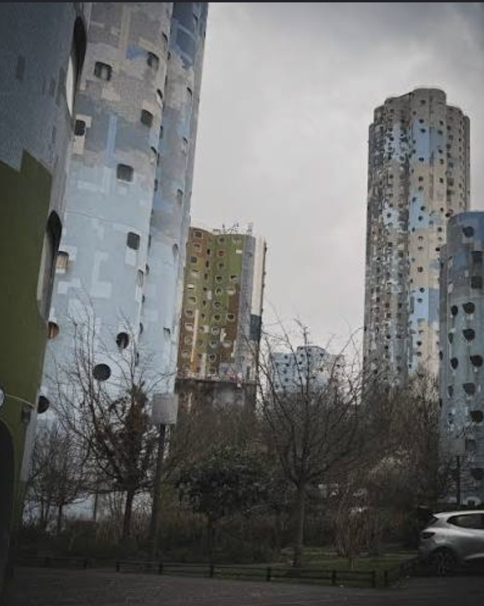

90s01 Les origines
Nanterre,
l'école de la débrouille
Une famille modeste dans le 92. Très tôt, les petits boulots s'enchaînent — marché, voiturier, bagagiste, livreur — puis une pizzeria remise à flot. La niaque, déjà, comme seul moteur.